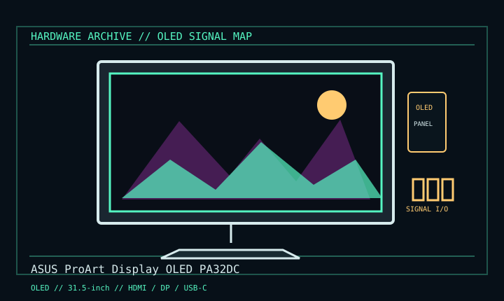

[ INDIVIDUAL COMPONENT // DISPLAYS ]
ASUS ProArt Display OLED PA32DC
31.5-inch 4K OLED professional reference display, 2022 generation. OLED

IDENTIFICATION: Verify the complete model/revision on the rear label. Specifications are tied to the cited manual/specification; variant-dependent values are qualified rather than generalized.
Specifications
| Catalog subcategory | Oled Displays |
|---|---|
| Exact product/family | ASUS ProArt Display OLED PA32DC |
| Era | 31.5-inch 4K OLED professional reference display, 2022 generation. |
| Panel / image | 31.5-inch OLED, 3840 × 2160, 16:9; maximum 60 Hz. Built-in motorized colorimeter for supported self-calibration. |
| Inputs / PD | Three HDMI 2.0, one DisplayPort 1.4 and USB-C with DP Alt Mode and up to 65 W USB Power Delivery. |
| Mechanical | 100 × 100 mm VESA; adjustable stand and hood. |
| Calibration | Colorimeter function requires supported ASUS software/firmware and calibration workflow. |
Revision, signal & host compatibility
Use exact PA32DC (not PA32U/PA32UC LCD products). 4K60 depends on input, source, cable and color format. USB-C video requires DP Alt Mode host; 65 W PD is not guaranteed for every laptop.
Match source signal type, sync/timing, connector pinout, bandwidth and power path to this exact display. Physical connector fit alone does not establish electrical or timing compatibility.
Preservation & repair notes
Record profile, colorimeter state, hours and static-content exposure. Use OLED sleep/care modes, avoid fixed high-contrast UI at high brightness, retain hood/stand, and avoid touching emissive panel. Specialist service only.
Record model suffix, serial/date label, accessories, image condition, configuration, source document and repair history. CRT high-voltage, LCD backlight and OLED panel risks require appropriate service training and the correct manual.
Manufacturer manuals & references
- ASUS PA32DC Official Technical SpecificationsManufacturer panel, ports and stand specifications.
- ASUS PA32DC Official Manual & SupportManufacturer operation, installation and care documentation.